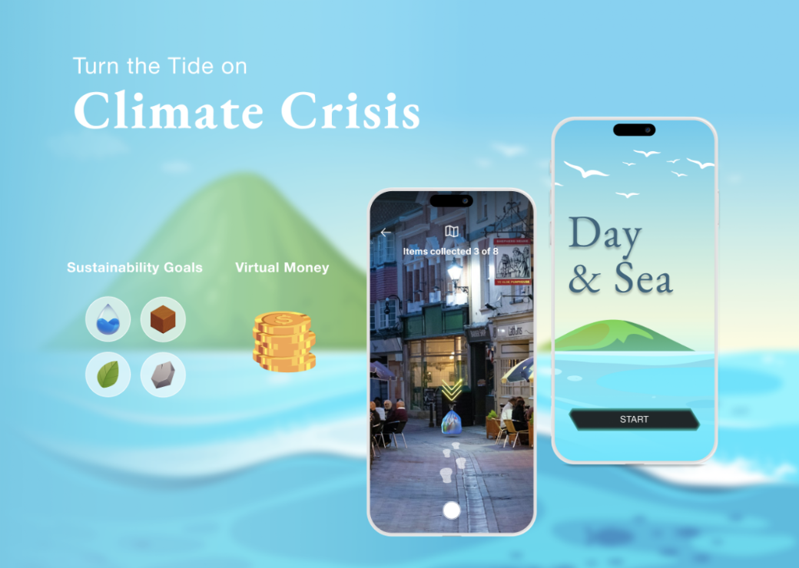

2024 - 2025
CITRIS - Climate Resilience
Game design · Augmented reality · Climate action
A collaborative research project exploring how serious games can drive environmental action around sea-level rise. The project combined a systematic literature review, a games review using the Wilcox Ladder of Participation framework, and stakeholder interviews to inform the design of Day & Sea – an AR mobile game in which players clean up litter, plant virtual mangroves, and foster coral reefs across three interconnected levels of action: individual, community, and policy. The game was conceptualized through a collaborative gameathon and uses real-world data and gamification to bridge digital interaction and meaningful climate action, with particular attention to communities disproportionately affected by climate change.